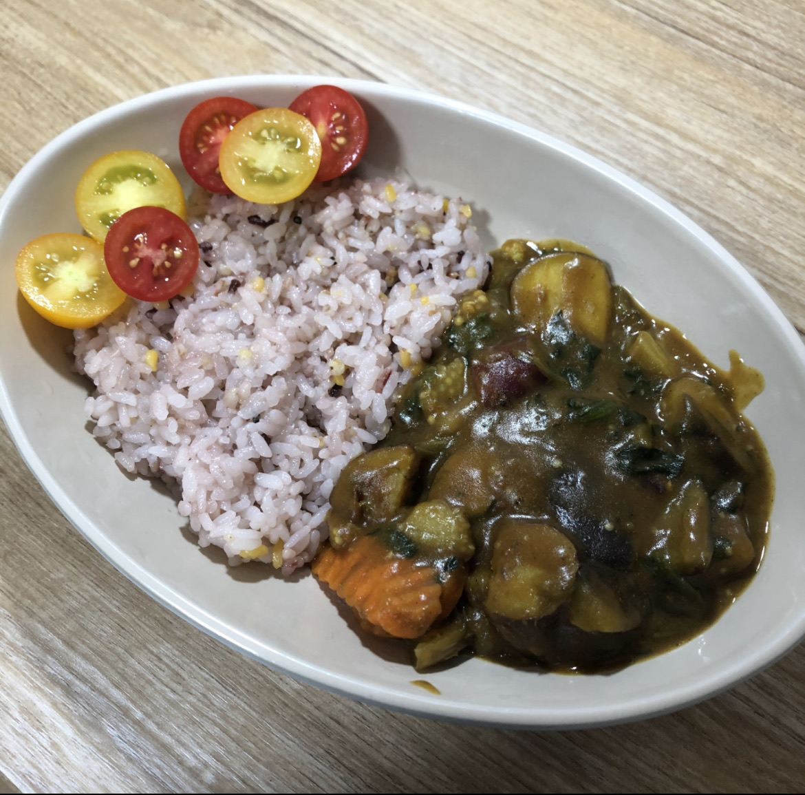
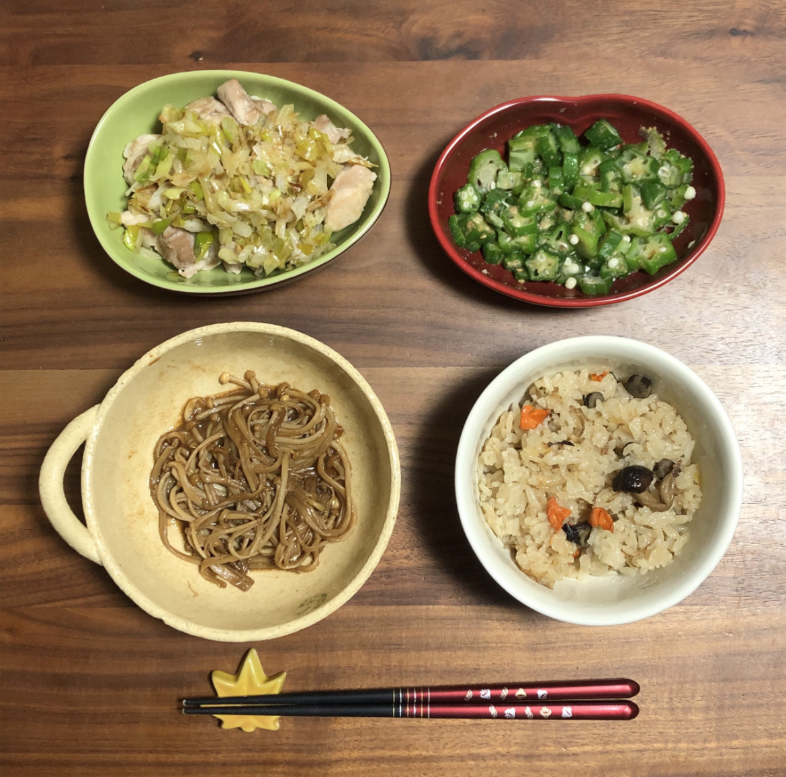

3.Interests
- Hobby
- Piano
- Game
- Handwriting
- Embroidery
- Cooking
- Pictures
- Favorite Food
- Future
I have been practicing playing the piano by myself for 6 years.
The only song I can completely play is “Ashitaka And San” from
the movie “Princess Mononoke.”
I hope I can play a lot of songs “The Bygone Days”, “A Town with
an Ocean View”, “The Promise of The World”, which are from Ghibli
movies, “Merry Christmas Mr.Lawrence”, “summer (full version)”,
and so on.
I like playing games like animal crossing.


I have better handwriting skills than average people.
I like things with embroidery and also doing it because embroidery
looks more elaborate than printed design.
I like cooking though my dishes are not very delicious.
 I like taking pictures of the sky, cats, nature, and so on.


Japanese food - sushi(tuna, natto), okonomiyaki, tonkatsu,
pumpkin tempura, and so on
Italian food - pasta with bolognese sauce or tomato sauce, lasagna,
margelita, and so on
Vietnam food - Pho with chicken or beef, spring roll
Korean food - kimchi, bulgogi beef, Korean seaweed
Greek food - mousakka, pita with gyro meat or tuna
Chinese food - sesami chicken, crab ragoon, sesami rice cake
snacks - chocolate, cookie, mixed nuts, fruit tart, cheese cake
fruits - blackberry, blueberry, strawberry, orange, mango, kiwi, plum,
melon, and so on
I like various kinds of food! If you have any recommendations,
please let me know! But, I don't eat spicy food!!
I have not decided yet what I want to do in my future, but I easily
get bored, so I will always need something that continues changing!